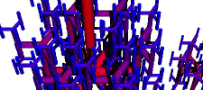

| Nature is filled with fractals, but the manufactured world is
mostly Euclidean. Technology developed without exploiting iteration across
many scales. Yet the lessons of blind physical forces, and of billions of
years of organic evolution, assert the importance of fractals. Recently, some
industries have started exploiting fractal forms. Here are a few examples. |
| Fractal Antennas: a multitude
of scales allows for broad-band reception in a compact space. |
 |
| Fractal Drums: multiple
length scales of the periphery give rise to localized excitations - only a part
of the drumhead moves - and to very efficient absorption of sound. |
 |
| Fractal Fiberoptics
Fractal bundles of optical fibers make waveguides with very low distortion. |
 |
| Fractal Internet Traffic
Understanding the fractal nature of internet traffic clarifies the design parameters. |
 |
| Fractal Mixers Using the design of
the lungs, two fluids can be thoroughly mixed with very low turbulence. |
 |
| Image Compression
A (localized) variation of Iterated Function Systems has been used to
automatically compress images. |
 |
|
| Perhaps the real blossoming of industrial fractals will
come once nanotechnology has developed cell-sized constructors. Swarms of these
could organize themselves hierarchically to build fractals, with results different
from those suggested by Lem, we hope. |